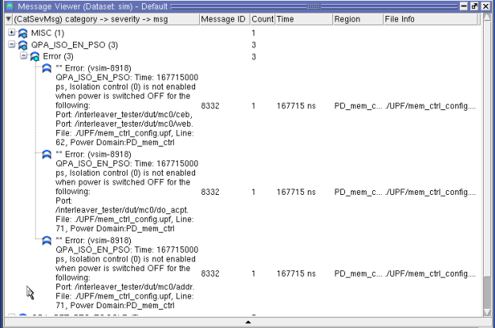
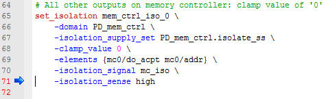
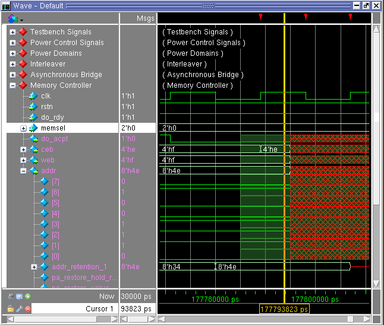

Recall that the
second time the PD_mem_ctrl domain is power cycled, the test bench
does not enable isolation for the PD_mem_ctrl domain outputs. In
the wave window, starting at about 167us, you will notice that the
address, write enable, and chip enable inputs to the SRAM models
(SRAM #1 signal group) are all unknown as a result of the unisolated
outputs from the PD_mem_ctrl domain, which have propagated to the
SRAMs. This propagation of unknown values is a problem.
The third time the domain is power cycled
the testbench does not follow the proper retention protocol by gating
off the clock to the retention elements. Notice that after the third
power cycle period, which ends at arund183us, the memory controller
addr output remains unknown after power has be restored – this also
is a problem.
Note that the testbench for the tutorial has
been specifically coded to cause these power control sequence errors
as a way to illustrate the capability of a few specific power aware
assertion checks. Further, Power Aware simulation can automatically
generate over 20 various power-specific checks that can detect many
types of subtle power-related errors that could otherwise go undetected
or require you to manually write assertions to identify them. Remember
that during the UPF processing step, all isolation and retention
checks were enabled using the ‑pa_checks=i+r argument values.
Tip While all isolation and retention checks have
been enabled in this tutorial, not all Power Aware assertion checks
are applicable for every design. When you run a Power Aware simulation,
you can enable individual isolation/retention checks by using specific
isolation or retention values for -pa_checks (such as ifc or rpo).
You can also control any enabled Power Aware checks using the pa
msg command.
Procedure
- Select the menu item to open the Message
Viewer window.
- Right- click in the Message
Viewer window and select to change the default
view.
- Expand the QPA_ISO_EN_PSO
category followed by the Errors severity to see the three error
messages as shown in Figure 1. There is an error message for each
un-isolated power domain ports
Note that the default categorization
of messages in the Message Viewer according to severity.
Figure 1. Message Viewer: Isolation
Not Enabled Errors
- Double-click either of the
following in the Message Viewer window:
The
167715ns value in the Time column — this opens the wave window (similar
to Figure 3) with the active cursor
placed at that time (167.715us).
The name of
the UPF file in the File Info column — this opens the UPF file showing the
line where the isolation strategy is defined.
Figure 2. Isolation
Strategy Defined in UPF File
- To debug why the memory controller’s
addr register value remains unknown after the third time the PD_mem_ctrl
domain is power cycled for retention, do the following in the Message
Viewer:
- Expand
the QPA_RET_RTC_TOGGLE category.
- Double-click
the 177798ns time value in the Time column for the first QPA_RET_RTC_TOGGLE
error message. This will display the wave window as shown in Figure 3.
- In the wave
window, zoom in around the cursor position and expand the addr signal,
as needed. Note that the retained 8’h4e addr value shown by the
addr_retention_1 signal becomes unknown at the first rising edge
of the clk signal after the PD_mem_ctrl domain is corrupted, as
indicated by the pa_store_x event.
This retained value is lost because the retention
condition, specified in the mem_ctrl_ret retention strategy, is
violated.
Figure 3. Retention Value Over-written
- To view
the definition of this retention condition, return to the Message
Viewer and double-click the mem_ctrl_config.upf file indicated in
the File Info column, which should display the following:
#-----------------------------------------------------------------
# Setup retention strategy for memory controller domain
#-----------------------------------------------------------------
set_retention mem_ctrl_ret \
-domain PD_mem_ctrl \
-retention_supply_set PD_mem_ctrl.retain_ss \
-retention_condition {(mc0/clk == 1'b0)} \
-elements {mem_ctrl_ret_list} \
-save_signal {mc_save high} \
-restore_signal {mc_restore low}
- Finish and exit this simulation
by typing the following command in the Transcript window